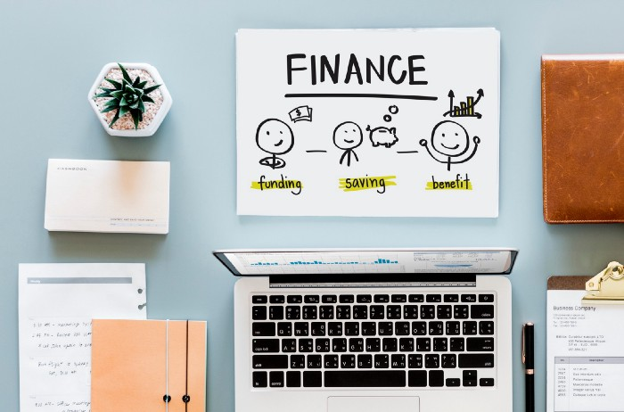

2019...Time to Tick “Check†on “Investing”
January 8, 2019
Happy New Year, so it’s the much anticipated 2019 already and you’ve got your gym membership in hand for those body goals, you’re probably super pumped about resuming to that exciting new/old job or better still, you’ve downloaded your DuoLingo App to learn that new language(which in my case would be Spanish, Hola amigos😋). So, what’s left on list of 2019 resolutions? I’ll take a guess,planning your financial future I’ll believe. Personally, I am SUPER psyched about the year as I hope to achieve much more goals than ever before and I believe you are too.
Going through a list of my 2018 articles, I realized that I emphasized mostly about Savings which unarguably is the 1st step to the amazing journey to a land I like to call “Not Being Broke Territory”. But there’s much more than not being broke, and it’s simply “ financial freedom”.
Investment.Source: Unsplash.com
This year however, I’ve decided to put the accent on “Investment”, there’s a small equation in macro-economics that simply reads S=I; i.e Savings equals Investment which contextually means Increased savings automatically translates to Increased investment; therefore accumulation of wealth which I’ve always believed to be aspiration of most people.
I had the liberty of asking a number of people about their financial aspirations for 2019 and gladly, most of them had a pretty concrete and precise goals as to what they want their money to do for them. Most of these goals are circled around personal developments such as taking professional exams, attaining a higher degree, getting more equipment for their businesses…. Amazing stuffs I must say.
Without a doubt, personal development on its own is one of the most important kind of investment and one of best favors you can ever do for yourself seeing that you’re most of the time guaranteed of returns be it in form of increased salary/wages or more patronage. Find your own thing, increase your knowledge about it and be good at it. There’s this confidence that exudes from you knowing your stuff. Nonetheless, there exists a pool of other investment classes we as young adults could venture into and I’ll be making a compilation below;
Asimple yet important phrase in investing goes thus “The bigger the risk, the higher the return and vice versa”, there’s always some level of risk no matter how minute attached to whatever investing decision you want so therefore, you have to recognize your risk appetite, how much of a risk can you take on? You could either be a risk averter (very low or no risk appetite); if you’re the type that likes to get your money back without losing a kobo i.e. a ‘sure shot return’, you probably fall in this category. And then, there’s the moderate risk taker (I like to think I fall in this class. For someone who likes to smile, I don’t smile well if I don’t get my expected return so I tend not to take on much risks).
Ultimate risk taker.Source: Unsplash.com
Some people however have their risk appetite on Grade 1, they can decide to quit their jobs without a second thought or even a back-up plan, you most likely would find them doing stuffs like sky diving or bungee jumping or even more scary stuff (cuz it’s only one life right), they are called Risk takers.
Most young people are expected to fall in this category because they have little responsibilities or commitments so there’s a wide door opened for risk taking.
Investment Classes
EQUITIES
This simply means owning a proportion of a company mostly a public company. Once you buy the shares of a company, you’re somewhat part of the owners and this gives you an entitlement to dividends (if the company pays) but most importantly capital appreciation i.e if the share prices go up in your favour. For instance, you bought shares of Nestle Plc. for ‎₦20/per share and for some reasons, it appreciated to ‎₦24.5/per share, the additional ‎₦4.25 is your return per every share you own.

The con to Equities is that it’s considered the most risky of investment classes as tables can turn in a flash. Also adding to its con is that it might require huge sums to dabble into.
If you want to understand trading in a less complex way, you could watch movies such as “wolf of wall street”, “the big short”, I heard “Billions†is amazing too.
BONDS & TREASURY BILLS:
Both are called “Fixed-income investments†just because there’s a certain assurance as to how much you’ll earn as return at initiation. It most time involves little risk since they’re mostly issued by Government and in this case even Federal Government of Nigeria cannot runaway with your money, this is one of those promises they can’t dare to break, Irony right (lips sealed). As expected, returns aren’t always as high as equity but yet a worthy investment.
MUTUAL FUNDS:
Now, this is for someone like me (the average risk taker). Mutual funds are mostly a combination of the above two mostly in a proportion of 20%-80% respectively. It’s for people who wants a taste of both worlds, a blend of both classes. Most brokerage firms have offers with a minimum of ‎₦5,000 and it’s pretty simple to open and operate.
Here are links to couple of offers.
The aforementioned are the most common forms but thanks to technology amidst others stuffs, there are much more investment instruments among which are:
Real Estate: If you have a flair for owning landed properties, this is your world
Precious Metals: Gold, silver and diamond are examples of metals you could buy when its prices are low and sell when the market is booming. The con to this however is that there’s little data for trading in Nigeria compared to other asset classes.
Agriculture via Fintech: Like I earlier said, thanks to technology, you could indirectly invest in Agriculture provided for through platforms like FarmCrowdy and Thrive Agric. Returns from this might not be as much as others but could still be a worthy investment when properly managed.
Cryptocurrency Trading (Bitcoin,Ethereum, Litecoin): Thanks to that guy whose face no one has seen before (Satoshi Nakamoto), some people have made a fortune from this. I personally still feel its far-fetched because I don’t understand but if it’s something you understand why not?
Forex Trading: Many young Nigerians have dabbled in this and it seems to have paid off (when they’re not losing). From my understanding, it simply is the trading of currencies. I haven’t personally paid much attention to it as well but at the same, it’s worth your consideration.
check out this https://www.forextime.com/education/forex-trading-for-beginners
On a final note, I’ve always followed a simple philosophy by one of the greatest investor of all time ‘Warren Buffet’ while trying to make any investment decision;
“Don’t invest in something you don’t understand and can’t explain to others in simple terms”, else it’s gambling.
More reason I’m super proud of myself for not partaking in MMM back then plus I was a young graduate with no money😋. Moral is that, take a nudge to understand the investment path you’ve chosen, ask people about its risk and return and then make informed decision. You could study the investing patterns of people that seem to be good at it like Warren Buffet.
If you have more investment options you’ll like to share, feel free to add below or tweet @adeyojuwon. Sending virtual kisses
.png)